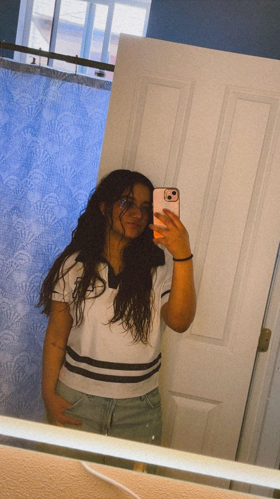
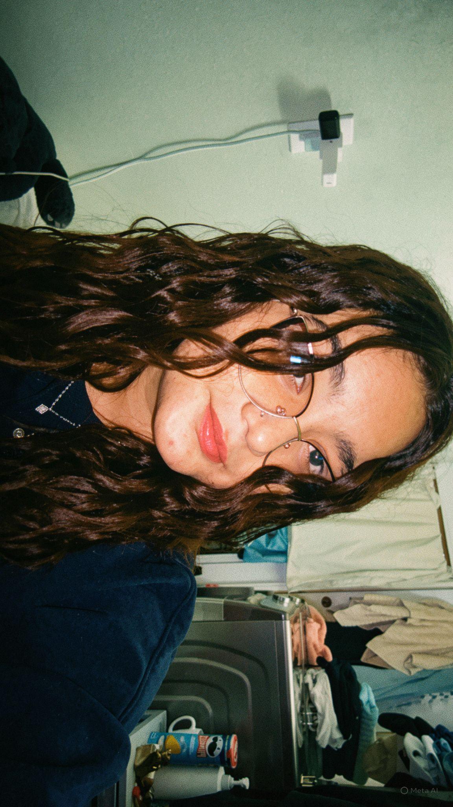
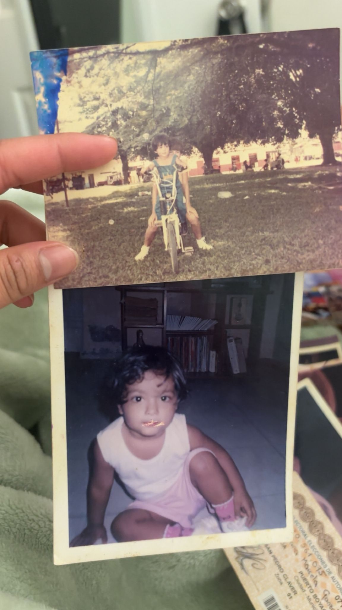
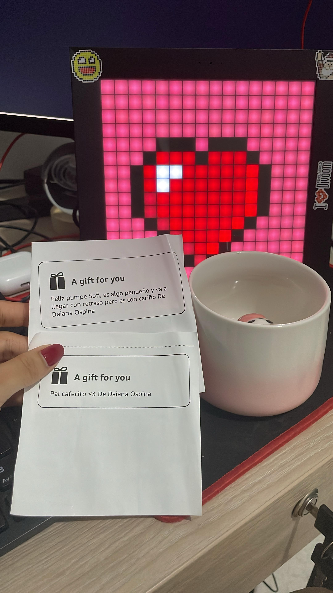
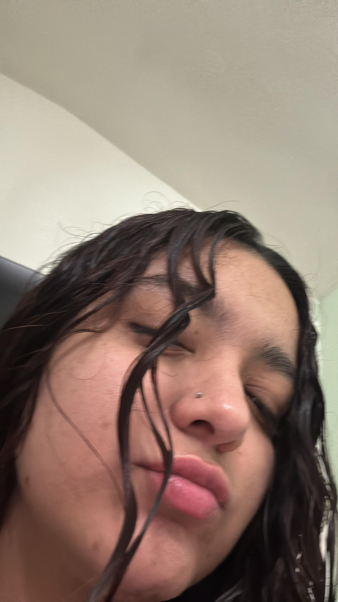
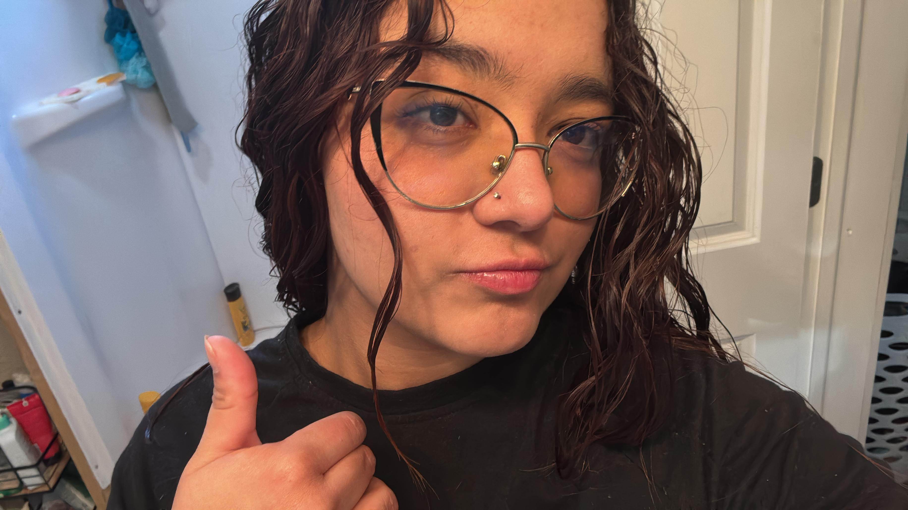
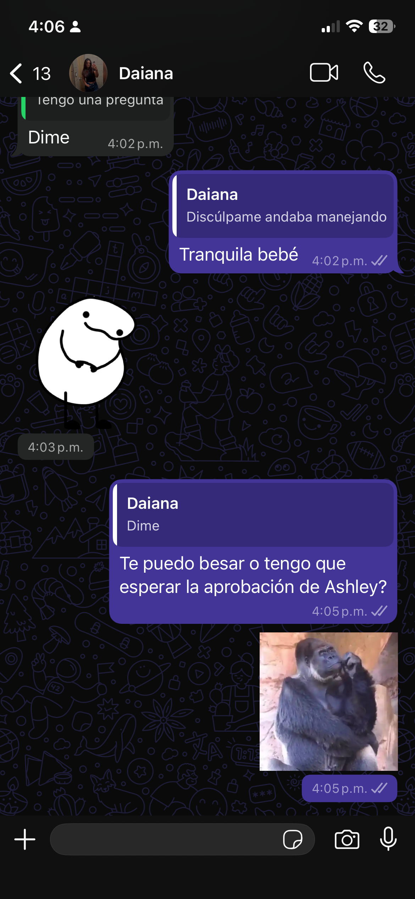
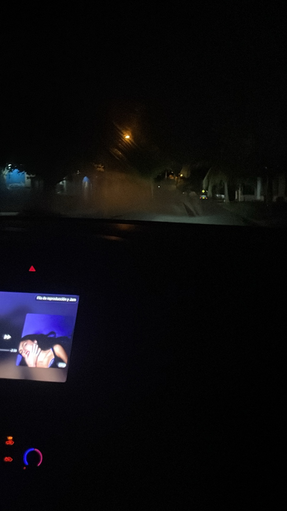
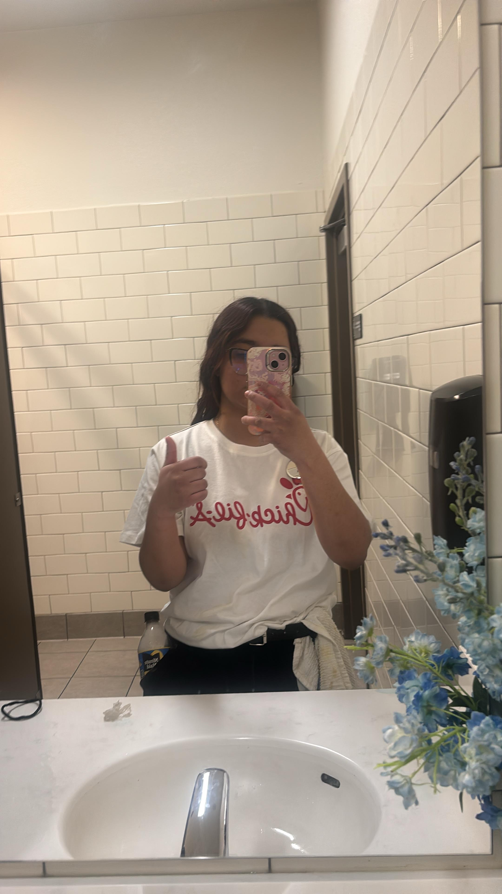

Amo lo tonta que eres contando chistes y lo mucho que me haces reír con ellos, incluso cuando son malísimos.
01
Hace un mes estoy pensando cómo escribir esto… si tengo las palabras correctas, si debería decir algunas cosas o si sería mejor guardármelas. Probablemente, cuando leas esto, ya habré cambiado muchas partes, borrado otras y vuelto a escribirlas, porque no sabía cómo poner en palabras todo lo que quería decirte.
La verdad es que tú eres increíble. Aunque a veces no te lo creas o dudes de ti, desde mi perspectiva eres algo precioso, algo hermoso. No tendría suficientes palabras para explicarte cómo te veo ni todo lo bonito que encuentro en ti.
Como te he dicho varias veces, no soy una persona que exprese mucho lo que siente. Suelo guardarme muchas cosas, pero contigo me nace hacerlo. No se siente forzado ni me da tanta timidez… bueno, en algunas ocasiones sí.
Quiero que sepas que nunca tienes que dudar de lo que siento por ti. Es algo genuino, bonito y que nace de la forma más inocente de mi corazón.
Por eso, para tu cumpleaños quise hacer algo un poco diferente. No quería darte solamente el típico mensaje ni el típico regalo. Quería hacer algo que significara para las dos y que, de alguna manera, consiguiera que en este día me sintieras cerca. Quería hacerme presente, aun estando lejos.
Quiero que sepas que celebro tu vida y que agradezco cada momento contigo. Como te dije hace ya un buen tiempo, yo te quiero completa: a ti, sin cambiar absolutamente nada. Te quiero en tus días bonitos, en tus días oscuros y hasta en los más oscuros.
Y ahora que estoy leyendo todo esto, parece que voy a pedirte que seas mi novia… pero no te lo voy a pedir en tu cumpleaños, ¿ok? Jajaja.
Lo que sí quiero es que tengas presente que, si tú me lo permites y me dejas, quiero ser la persona que te acompañe. Y te prometo, con toda la certeza que tengo, que voy a amarte de la forma más bonita que sé. Voy a intentar que tus días conmigo sean felices, que te sientas amada, cuidada y acompañada, incluso cuando no pueda estar físicamente a tu lado.
No quiero que sientas que debes ser perfecta conmigo, porque no es una versión perfecta de ti la que quiero. Te quiero completa, siendo tú, con todo lo que eres y con todo lo que llevas dentro.
Porque tú eres para mí eso precioso y hermoso que todavía no sé explicar con palabras. Eres alguien que llegó a mi vida y despertó en mí una forma de querer que no sabía que podía sentir tan naturalmente.
Feliz cumpleaños, Daiana.
Espero que hoy puedas sentirme un poquito más cerca y que nunca olvides lo especial que eres para mí. Te amo de la forma más genuina, bonita e inocente que sé.
02
El día en que lo entendí
Un día me desperté y me di cuenta de que te amaba.
No te voy a mentir: no hubo un momento exacto, una fecha especial ni algo extraordinario de película que me hiciera saberlo. No pasó nada enorme. Simplemente pasó.
Solo sabía que quería tenerte cerca, ver todas las películas posibles contigo, saber de ti, escucharte y dedicarte canciones. Quería encontrarte en mis días, contarte cosas pequeñas y sentir que, de alguna manera, tú también estabas ahí.
Supongo que fuiste entrando poco a poco en mi vida, en mis pensamientos y en mis días, hasta que un día entendí que ya te amaba. Sin planearlo, sin buscarlo y sin darme cuenta exactamente de cuándo comenzó.
Confieso que tuve muchos miedos y que hubo cosas que me dolieron muchísimo. Pero mi amor por ti nunca se trató de posesión.
A mí solo me importaba que fueras feliz y que, si de alguna manera yo podía ayudarte a sentirte un poco mejor, acompañarte o aportar algo bonito a tu vida, para mí eso ya era suficiente.
03
Las cosas que amo de ti
Amo lo fuerte que eres, la forma en que enfrentas los problemas de tu vida y cómo, aunque muchas veces las cosas no sean fáciles, nunca te rindes.
Amo cómo te emocionas cuando algo te gusta, porque se te nota demasiado y me parece muy lindo verte así.
Amo cómo te sonrojas cuando estás nerviosa y lo tímida que te vuelves. No sé, simplemente me parece demasiado tierno.
Amo el corazón que tienes, porque a pesar de todo, siempre intentas ver algo bueno en las personas, incluso cuando muchas veces no se lo merecen.
También amo lo ingenua que eres en algunas cosas y lo tierna que te vuelves por eso.
Amo todas esas cosas de ti, incluso las que tú tal vez no notas o no consideras importantes. Porque son justamente esas cosas las que te hacen ser tú, y yo amo quién eres.
04
Cuando te sientas lejos de mí
Vuelve aquí.
Cuando te sientas lejos de mí, quiero que vengas a esta parte y recuerdes que estoy contigo, incluso cuando no pueda estar cerca.
Quiero que me recuerdes en las canciones, en los momentos, en las cosas pequeñas y en todo eso que de alguna manera te haga pensar en mí.
Y aunque a veces Sofía esté enojada, distante o no sepa cómo expresar lo que siente, siempre va a estar para Daiana. Porque la ama, porque le importa y porque no hay nada que tú hagas que pueda cambiar eso.
Sofía nunca podría odiarte. Y no son solo palabras bonitas escritas por tu cumpleaños. Es algo que siento de verdad.
05
Lo que deseo para ti
Que la vida también sea bonita contigo.
Deseo que a tu vida lleguen cosas buenas, que se cumplan cada uno de tus deseos y cada una de tus metas.
Deseo que algún día puedas mirar a la Daiana del futuro, sentirte orgullosa de ella y agradecer cada parte del camino que tuviste que recorrer para llegar hasta ahí.
Y que nunca pienses que no eres importante para nadie, porque te lo digo: lo eres para mí, y me voy a encargar de que lo sepas.
No quiero que pienses que no mereces las cosas bonitas que te pasan. Quiero que las disfrutes, que tengas calma y que no sientas esa calma como algo malo o extraño.
Quiero que entiendas que también puedes ser feliz, que no tienes que sentir culpa por estar bien y que sí mereces todo lo bonito que llegue a tu vida.
Deseo que puedas verte con el mismo amor con el que yo te veo, que reconozcas todo lo que vales y que nunca dudes de lo lejos que puedes llegar.
Quiero que seas feliz, que encuentres tranquilidad y que la vida te devuelva un poquito de todo lo bonito que hay dentro de ti.
06
Nuestros pequeños momentos
Pedacitos de ti que fui guardando.
Todas estas fotos, y muchas más que todavía faltan, hacen parte de tus momentos y también de los nuestros.
Algunas parecen simples: una foto tuya, una canción en el carro, un regalo, una conversación, una imagen cualquiera de tu día. Pero para mí no son cosas pequeñas. Son pedacitos de ti que fui guardando sin darme cuenta.
Y si haces memoria, hay una de estas fotos que está conmigo desde el primer día en que empezamos a hablar de verdad.









Me gusta pensar que, sin saberlo, desde ese momento ya estaba empezando a guardar partes de ti.
Tal vez todavía no tenemos todas las fotos que quisiera, ni todos los recuerdos que algún día podremos guardar, pero sí tenemos estos pequeños momentos. Y para mí significan mucho, porque en cada uno hay una parte de nuestra historia.
Antes de terminar…
Bueno, ya fue suficiente romanticismo.
Y, por último, para no sentirme tan cursi después de escribir todo esto, recuerda que yo soy una rockstar y las rockstars no hacemos este tipo de cosas, ¿bueno?
Así que guarda esta página, disfrútala y no le cuentes a nadie que Sofía puede ser tan romántica.
Esto fue solamente por ti.
Feliz cumpleaños otra vez, Daiana.
Te amo.
esto es solo una parteeeeee, te puedes sorperder.